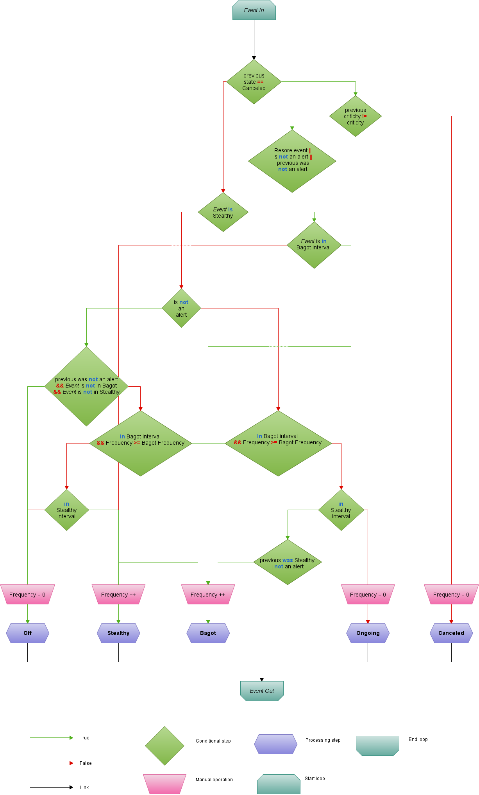

Event Status specification¶
Possible statuses¶
- 0 - Off
- 1 - On going
- 2 - Stealthy
- 3 - Bagot
- 4 - cancel
Off¶
An Event is considered Off if it is stable (i.e Criticity stable at 0).
On going¶
An Event is considered On going if its Criticity is in an alert state (> 0).
Stealthy¶
An Event is considered Stealthy if its Criticity changed from alert to stable in a specified amount of time.
If the said Event has its Criticity changed again within the specified time, it is still considered Stealthy.
An Event will stay Stealthy for a specified time (See stealthy_show_time) and will then be Off if the last state was 0, On Going if it was an alert, or Bagot if it qualifies as such.
Bagot¶
An Event is considered Bagot if it has been changing from an alert state to a stable state a specific number of times on a specified period of time. (See bagot_freq and bagot_time)
Cancel¶
An Event is considered cancel if the user flagged it as such from the Ux.
An Event flagged as cancel will change state if it goes from an alert state to a stable state.
Additionally, the user can specify if it should change state if its criticity changes within the various alert state or only between alert and stable states.
Workflow¶
Additional informations¶
Restore event: Boolean, equalsTrueif the user wants ancancelevent to change state when its criticity changes withing the various alert state,Falseif it changes only between alert and stable stated.alert: An alert is an event in an alert state (i.e. with a Criticity greater than 0)
Configuration¶
A statusmanagement crecord is needed for the configuration of the time intervals and frequencies, it has the following structure
{
"type": "object",
"properties": {
"crecord_type": {
"enum": ["statusmanagement"],
"required": true
},
"restore_event": {
"type": "boolean",
"required": true,
"default": true
},
"bagot_time": {
"type": "number",
"required": true
},
"bagot_show": {
"type": "number",
"required": true
},
"stealthy_time": {
"type": "number",
"required": true
},
"stealthy_show": {
"type": "number",
"required": true
}
}
}